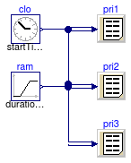

Collection of models that illustrate model use and test models
Information
This package contains examples for the use of models that can be found in
Buildings.Utilities.Reports.
Extends from Modelica.Icons.ExamplesPackage (Icon for packages containing runnable examples).
Package Content
| Name |
Description |
 Printer Printer
|
Test model for printer |
Test model for printer

Information
Extends from Modelica.Icons.Example (Icon for runnable examples).
Modelica definition
model Printer
"Test model for printer"
extends Modelica.Icons.Example;
Buildings.Utilities.Reports.Printer pri1(
header="time ramp",
nin=2,
samplePeriod=0.1);
Modelica.Blocks.Sources.Clock clo;
Modelica.Blocks.Sources.Ramp ram(duration=2);
Buildings.Utilities.Reports.Printer pri2(
header="time ramp",
nin=2,
configuration=2,
samplePeriod=0.1);
Buildings.Utilities.Reports.Printer pri3(
header="time ramp",
nin=2,
configuration=3,
samplePeriod=0.1);
equation
connect(clo.y, pri1.x[1]);
connect(ram.y, pri1.x[2]);
connect(clo.y, pri2.x[1]);
connect(ram.y, pri2.x[2]);
connect(clo.y, pri3.x[1]);
connect(ram.y, pri3.x[2]);
end Printer;
Automatically generated Mon Jul 13 14:30:50 2015.
 Buildings.Utilities.Reports.Examples.Printer
Buildings.Utilities.Reports.Examples.Printer